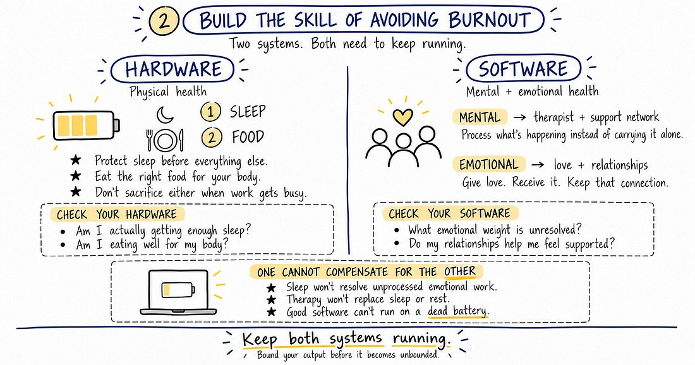

The pull to just get things done
You know the feeling. Three free hours open up. The kids are quiet, the inbox is loaded, and the to-do list has no bottom. The pull to push something forward is overwhelming — and the guilt when you don't is worse.
Here's the problem: “get a bunch of stuff done” never changes anything, because it never actually ends. In sales, the pipeline doesn't close. There's always one more follow-up, one more proposal, one more account to touch. If your only defense against burnout is working less, you're going to lose — because the work isn't going anywhere.
So the question isn't “how do I work less?” It's “why does some work drain me and some work fuel me?”
Those are fine. They just don't fix the two things that actually cause it.
1You're not working in your zone of genius
Your zone of genius is the intersection of three things. Work that sits outside that intersection drains you no matter how good you are at it or how much it pays.

Joy
The work you'd still choose to do if nobody was watching and no result was guaranteed.
Would I do this with no applause and no guaranteed outcome?Market
Whether anyone out there actually wants what you're offering right now — and will pay for it.
Do people want this today, and will they pay?Money
The work pays enough to support the life you want to live.
Does this fund the life I'm actually building?Here's the trap for A-players: you can be excellent at something, get paid well for it, and still burn out doing it. Excellence and pay aren't enough. For most people, joy is the missing piece — and the standard advice says the way to find joy is “work-life balance.”
But balance implies you're not moving. And it's staying in the same place too long that makes A-players start to resent their own work. Most people who say they need balance to be happy spend the balance doomscrolling.
You don't need balance.
You need to be in constant movement.
When you're moving forward, energy returns. When you can see growth, the work becomes the reward.
Stop optimizing for comfort. Start optimizing for momentum.
Chase balance if you want to stay average. Chase progress if you want to build something meaningful. Progress is what happens when you're in your zone of genius.
2You don't have the skill to avoid burnout
Burnout is preventable, not inevitable. You build the skill of avoiding it the exact same way you'd build any other skill — and this is the easier reason to solve today. To learn it, you need to understand two systems, both of which have to keep running at once.

Hardware
- 1 · Sleep Protect it before everything else.
- 2 · Food Eat the right food for your body.
Software
- Mental A support network — people whose job is to help you process what's happening instead of carrying it alone.
- Emotional Love. The people in your life you give it to and get it back from. Keep that connection.
Where this shows up in the work
The account you resent
Great at it, well paid for it, drained by it. That's a zone-of-genius miss, not a workload problem. Name it. Then decide what moves — the account, your role on it, or the way you work it.
Visible progress beats busy
A full calendar isn't momentum. A pipeline that moves is. Build the week around progress you can see — stages advanced, proposals out, decisions made — not tasks cleared.
Sleep is a sales tool
The first thing a busy quarter steals is sleep, and the first thing that goes with it is judgment. Protect the hardware before the big meeting, not after.
Don't carry it alone
The lost deal, the hard conversation, the quarter that stung — process it with someone. A teammate, a mentor, a professional. Carrying it solo is the slow version of burnout.
Run the audit
Two steps. Be honest — this stays on your device. If the answer is “no” to any of these, you've found where the drain is coming from.
Audit your zone of genius
If you don't know what your zone is, flip the question: What don't I want? What doesn't give me joy? What work has no market for it? What doesn't pay the money that lets me live the life I want?
Look at your hardware and software
Your one move
Pick the single “no” above that would change the most, and name what you'll do about it this week.
Your audit stays on this device. Come back next month — it'll still be here, asking if the no turned into a yes.
Next read

Become Dangerously Productive Like a CEO
Once you're in your zone and both systems are running, momentum needs a system. Sharran's follow-up lays out his: audit where time and energy really go, build one repeatable system at a time, and put each one on a calendar or a trigger so it runs without reminders. One complete system beats five half-built ones.
Momentum isn't a mood. It's a system you built on purpose.